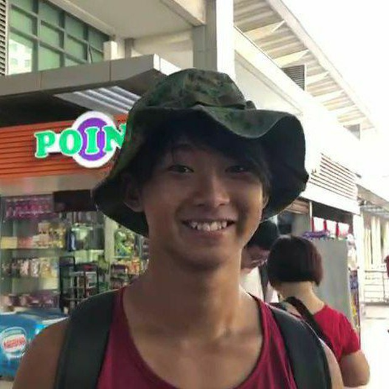

About Me

Hello! My name is Kiyan, and I'm currently in my final year in the National University of
Singapore (NUS), studying Life Sciences with a second minor in Computer Sciences. I have
always had an interest in Biology since young, and have always been good in using
technology and devices, always solving IT issues for my friends and family. Funnily, I
never knew there was something called "Computer Sciences" until my second year of
university, when I had to take a compulsory CS module. It was that module which allowed
me to discover my passion for CS, hence the second minor. I am always looking to learn
new things, so advice is always welcome, be it for my projects or my career!
Computer Science Projects
-
Greg: Software engineering individual project. Greg is a application that looks like
a chatbot and helps you keep track of day to day tasks, events and deadlines.
-
Lie Detector: IoT group project. The lie detector uses IoT devices to measure
biological features and uses machine learning in the cloud to determine whether a
person is lying.
-
BookFace: Software engineering group project. BookFace is an application designed
for small libraries to keep track of library members and books, and provides a system
to track loans of books.
FAQ
Q: Why does the website look so bad?
A: The website is currently is a work in progress and has recently been converted from
Markdown to HTML (as of 19 Jan 2023). More will be added soon so stay tuned!
Q: Why not a second major in CS?
A: I actually have taken sufficient credits and fulfilled the requirements required for a
second major in CS. However, due to certain administrative issues such as the late
application (due to late awakening to my interest in CS) and the limited number of spaces
offered by my university, I was unable to officially get the second major
as part of my degree.
Q: Are you still thinking of a career in the biomedical industry in the future?
A: Currently, my aim is to break into the tech industry. However, I have also thought of
careers which involve the use of both my expertise, such as computational biology.